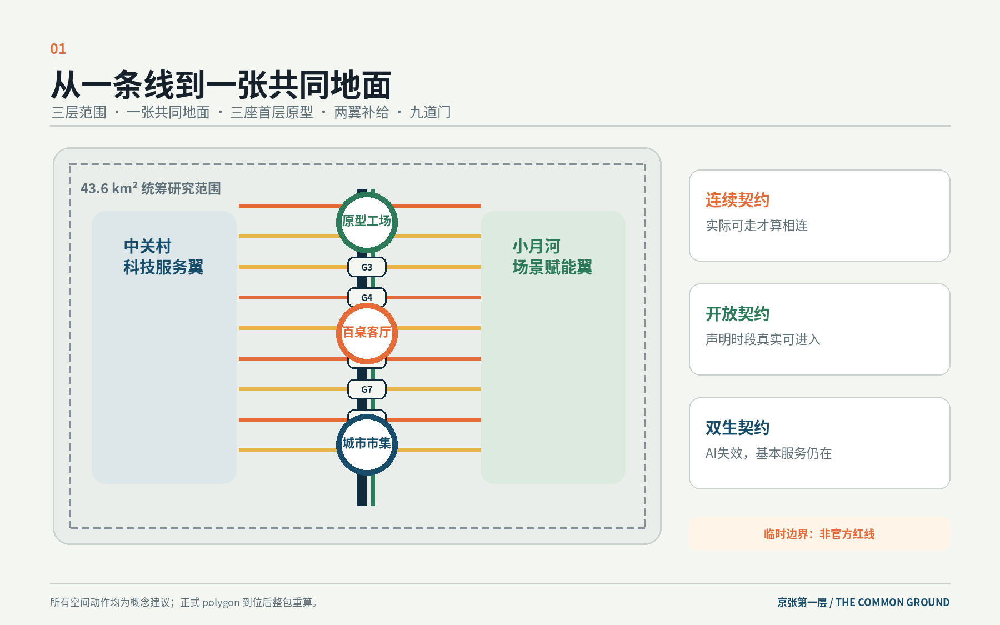
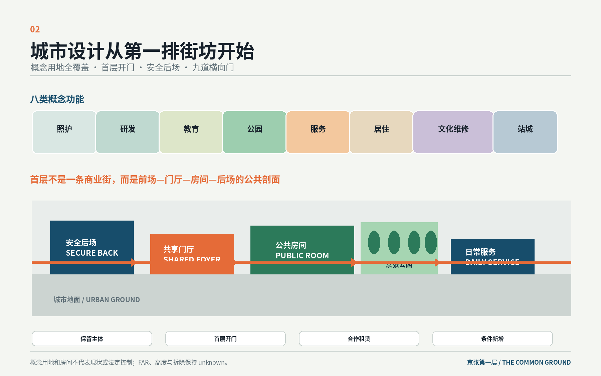
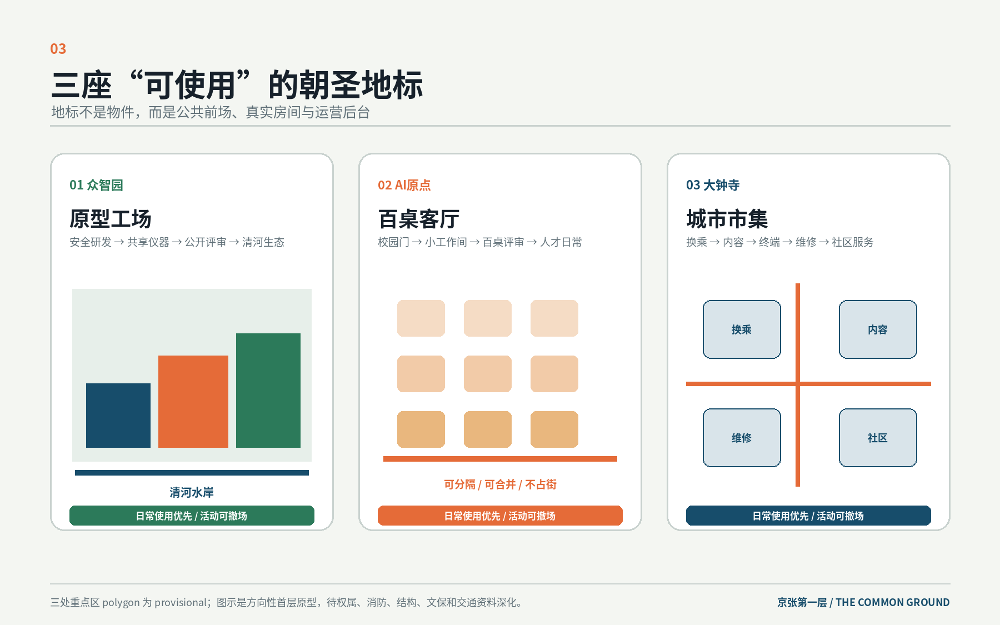
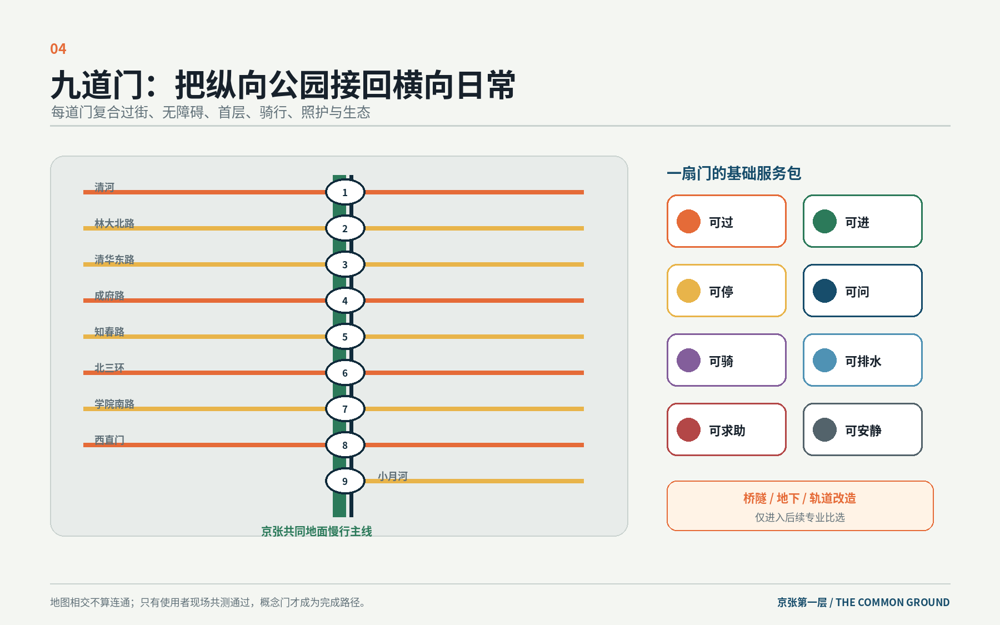
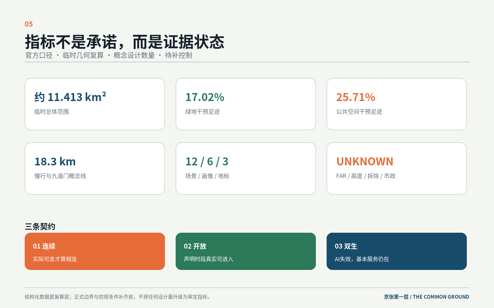

众智园 · 原型工场
安全研发后场、共享仪器门厅、公开评审前场和清河生态水岸。
把公园、园区、校园、社区和站口接回同一张可进入、可共享、可照护的城市地面。
设计从遗址公园两侧的第一排街坊和建筑首层开始。九道门修补横向日常，三座首层原型承接研发公开、近校共创和城市采用，十二间房让每个AI场景都有真实空间与运营后台。

概念用地完整覆盖临时总体范围，但不冒充法定地类。公共前场、共享门厅、真实房间和安全后场形成城市第一层。

安全研发后场、共享仪器门厅、公开评审前场和清河生态水岸。
校园门、小工作间、公开评审、专业门诊与人才日常的五分钟短链。
四角换乘、内容生产、终端试用、维修循环与社区服务。

地图相交不算连通。每道门都要通过现场共测，并同时处理过街、无障碍、首层、骑行、照护与生态。

实际可走才算相连。
声明时段真实可进入。
AI失效，基本服务仍在。

sources.json · metrics.json · compliance_matrix.json · standard_matrix.json · design_depth_matrix.json
self_check.json · geometry/*.geojson · drawings/*.pdf